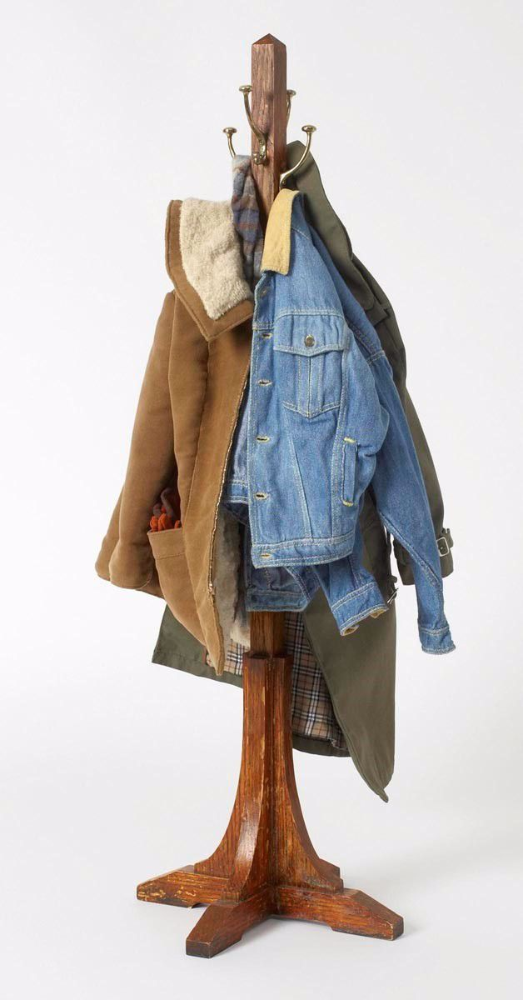
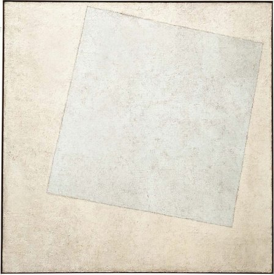
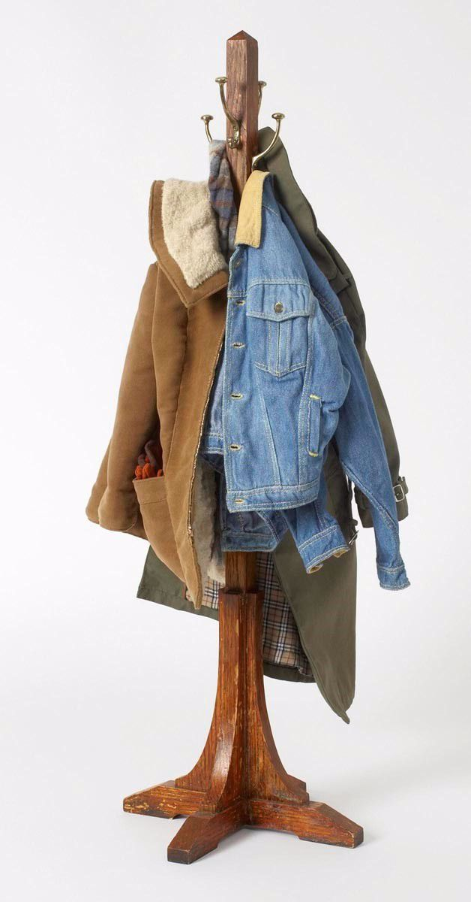
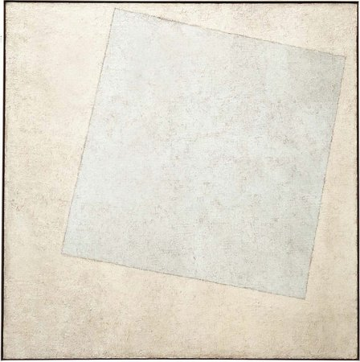

Hello! This is me in Tompkins Square park because its finally starting to get warm outside.
This is a sculpture by one of my favorite artist's Charles Ledray, intricatley handrafted on a small scale.
This is another one of my favorite pieces by Kazimir Malevich called White on White.